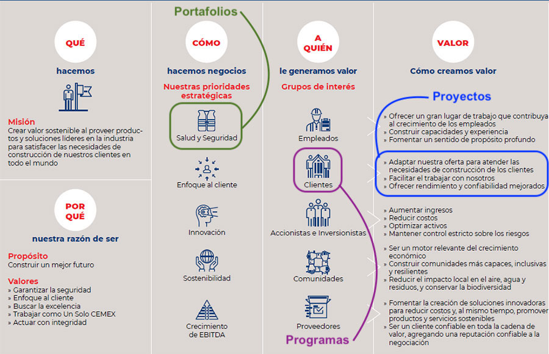

El ciclo de vida del proyecto es el conjunto de fases en que son divididos los proyectos para facilitar su gestión. Esta división es realizada por los directores de proyectos. Las organizaciones suelen identificar un conjunto de ciclos de vida específico para emplearlo en sus proyectos. En el ciclo de vida de un proyecto se definen las fases que vinculan el inicio del proyecto con su fin. Y esas fases son: → Planificación → Ejecución → Cierre del proyecto. Por lo general, la transición de una fase a otra dentro del ciclo de vida de un proyecto implica alguna forma de transferencia técnica. Así, los entregables de una fase son revisados para verificar su cumplimiento y son aprobados antes del inicio de la siguiente fase. Sin embargo, hay ocasiones en que una fase comienza antes de la aprobación de los entregables de la fase anterior, especialmente cuando se identifica riesgos de no hacerlo. Esta superposición de fases es conocida como ejecución rápida. No existe una sola forma, única e incuestionable, de establecer el ciclo de vida de un proyecto. Ciertamente hay organizaciones que han estandarizado todos sus proyectos con un ciclo de vida único, pero han llegado a ello tras un proceso de aprendizaje. Otras organizaciones tienen la flexibilidad de permitir al equipo de dirección del proyecto definir el ciclo de vida más apropiado para el proyecto que desarrollarán.
¿Qué es un caso de negocio?
Un caso de negocio es una propuesta, en la cual se busca probar a un cliente, colaborador o inversionista que el producto o servicio propuesto es una buena inversión.
¿Por qué hacer un caso de negocio?
Un caso de negocio ayudará a ilustrar la idea propuesta y, dependiendo del caso de negocio, tocará temas como: la estrategia de negocio, el plan de marketing, la visión y qué se espera del proyecto. Todo esto se muestra en forma de un documento.
La gerencia de proyectos es la metodología para plantear un proyecto a lo largo de diferentes fases que van desde su inicio hasta su fin. El encargado de gestionar esta gestión de proyectos es el Project Manager o director de proyectos, que es el encargado de elaborar el plan y de controlar y monitorizar cada uno de los pasos.
En la gestión de proyectos se suelen incluir cuatro fases: el comienzo, la planificación, la ejecución y el cierre. De todas formas, siempre hay que tener en cuenta una quinta fase para el seguimiento y control.
1. Análisis de viabilidad Antes de iniciar un proyecto hay que llevar a cabo un análisis de viabilidad, para conocer el alcance del proyecto, sus riesgos, los costes y los plazos.
2. Programación La programación consiste en planificar todas las tareas necesarias y los recursos que supondrán, tanto en personal, como en material, como en tiempo. Es el momento de calendarizar todas las acciones.
3. Ejecución Los equipos comienzan a trabajar en cada tarea con los recursos asignados. Deben seguir la planificación marcada.
4. Seguimiento y control Durante toda la ejecución del proyecto existe una fase que se desarrolla de forma paralela: el seguimiento y control. Se suelen realizar informes periódicos para controlar el desarrollo del proyecto.
5. Evaluación y cierre del proyecto En la fase final del proyecto hay que realizar una evaluación en profundidad que recopile todos los informes periódicos y que determine si lo realizado se ajusta a lo que se planificó.
El Project Manager debe supervisar cada una de las fases del proyecto y ajustar los procesos para que al final se consigan los objetivos tal y como se habían planteado. Aunque es difícil planificar la organización de todos los recursos con los que hay que contar para llevar a cabo un proyecto, su gestión ayudará en gran medida a que el proyecto se desarrolle con éxito, ya que en todo momento existe una hoja de ruta.Un proyecto se puede definir como aquella secuencia de tareas que requieren ser finalizadas con el objetivo de alcanzar un resultado, servicio o producto especifico. Cada proyecto debe ser diferente, incluso si tienen mismas finalidades. Para que un proyecto tenga mejor fluidez y sea mas productivo, los equipos que están trabajando en él, administran las tareas individuales a cada uno.
Varios proyectos trabajando en una simultaneidad o paralelismo conforman un programa maestro, al trabajar de esta manera se permiten alcanzar los objetivos y beneficios que se requieren, lo que no se podría hacer igual si se trabajase de a uno. Para la entrega final, cada proyecto es indispensable.
El portafolio se define como aquella colección ya sea de proyectos o programas que no necesariamente están interrelacionados, de esta misma manera pueden tener objetivos que son independientes. Los factores que componen el portafolio deben pasar por procesos como la categorización, evaluación y priorización.
